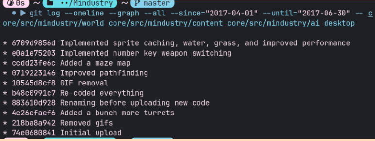
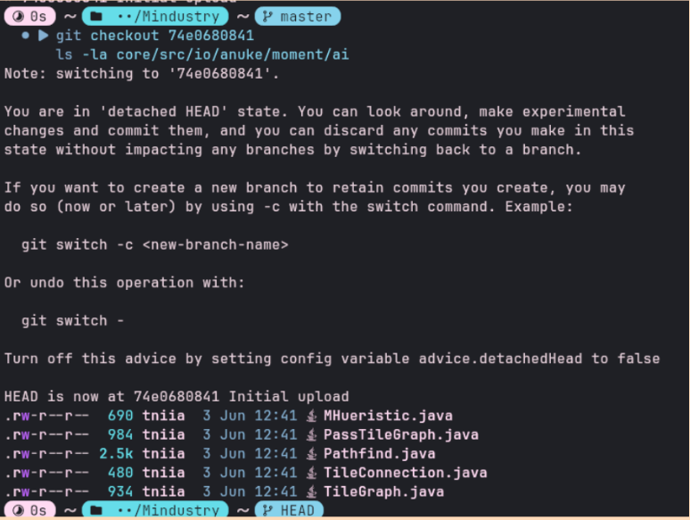

Análisis del Stack Técnico
Tecnologías y arquitectura de software empleadas en la solución.
terminal Tecnologías Identificadas

Java 17 (LTS)
Lenguaje base que permite la portabilidad extrema y el uso de recolectores de basura avanzados para la simulación.
Arc Engine (fork de LibGDX)
Núcleo gráfico personalizado que abstrae SDL2 y OpenGL, diseñado específicamente para juegos de alto rendimiento en grid.
Gradle 8.x
Sistema de automatización de construcción que gestiona los complejos pipelines de compilación para múltiples plataformas.
view_quilt Módulos Críticos
Lógica de simulación, mundo e IA totalmente desacoplada de la interfaz.
Implementación LWJGL3/SDL2 para ejecución nativa en PC.
Módulo headless optimizado para baja latencia en entornos competitivos.
Adaptadores táctiles y optimización para Android e iOS.
Hito 2 - Implementación
Desarrollo iterativo, análisis de módulos core, y automatización CI/CD.
Gameplay + IA (Tania Ayque)
Análisis de la IA y lógica de juego.
smart_toy Tareas Asignadas
Explorar el árbol de git de world, content, ai y desktop. Hacer checkout al commit donde se introdujo la lógica de IA y tomar capturas de la estructura del módulo y del archivo de pathfinding. Tomar el git log del período. Redactar tabla de commits clave y análisis de decisiones técnicas (3 párrafos). Total: 3 capturas + redacción de análisis.
Evidencia Visual (3)

